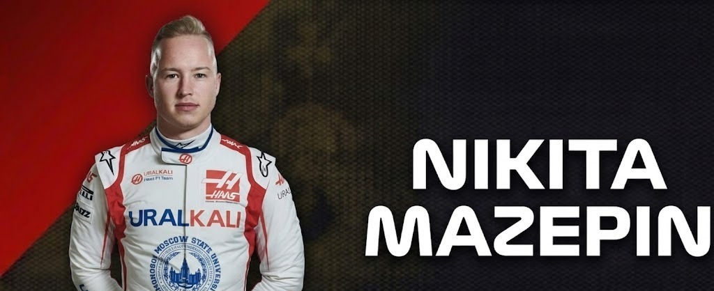
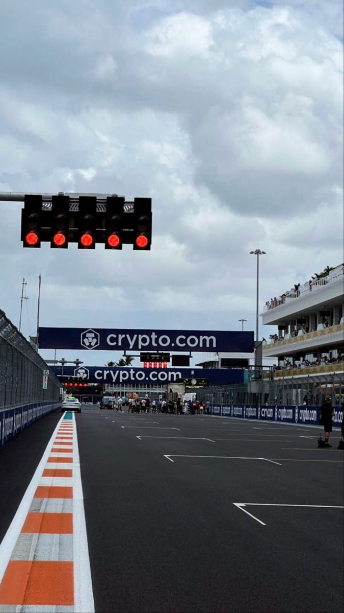

Nikita Mazepin
DRIVER PRESENTATION

Nikita Mazepin
Adaptación Técnica y Desafíos Competitivos de Nikita Mazepin en la Temporada 2021
Nikita Mazepin inició su carrera en el karting internacional, progresando a través de la GP3 y la Fórmula 2 donde obtuvo victorias que validaron su ascenso a la máxima categoría. En 2021, se unió al equipo Haas para su temporada de debut, enfrentando la complejidad de un monoplaza con limitaciones aerodinámicas significativas en un año de transición para la escudería. Durante este período, Mazepin se enfocó en comprender la dinámica de fluidos y el comportamiento de los neumáticos Pirelli en tandas largas, trabajando intensamente en la comunicación con sus ingenieros para mejorar la estabilidad del vehículo. Su trayectoria estuvo marcada por un proceso de aprendizaje continuo y la búsqueda de consistencia en circuitos de alta exigencia física, contribuyendo con datos técnicos valiosos para el programa de desarrollo a largo plazo del equipo estadounidense.
MOMENTOS DESTACADOS

Victorias en Fórmula 2
2020: Mazepin logra triunfos importantes en la antesala de la F1, demostrando su capacidad competitiva.

Debut con Haas
2021: Su primera temporada completa en la máxima categoría, un año de aprendizaje intensivo.
Aporte Técnico
2021: Trabajo constante con el equipo para recopilar datos cruciales para el monoplaza de la siguiente temporada.